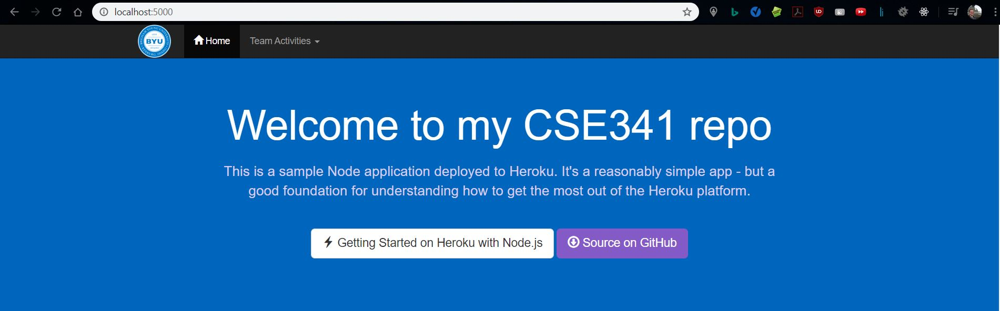

Overview
For this week’s team activity, we’ll focus on getting a web application
set up that you’ll be able to use for the rest of the semester. The
application will be capable of running on both your localhost and Heroku.
You will use of the EJS templating engine, which both the Udemy course
and class will be using for the rest of the semester.
However, Pug and Handlebars are two valid alternatives that can be used
for templating.
Instructions
It’s advised to complete the reading from the Udemy course this week before starting the assignment. It will contain a lot of information and resources that are relevant to this team activity.
Once you are ready, complete the following core challenges with your team:
Carefully follow this tutorial from Heroku to create a Node.JS application that runs on both Heroku and your localhost.
Using the “/” path, render index.js and send it the JavaScript Object:
{ title: “Welcome to my CSE341 repo” }Modify the index.ejs to display the title variable in the header using the EJS templating brackets.
Create a routes folder that will contain routes to different assignments and team activities. Create a path “/ta03”, whose routes will be handled in a ta03.js in the routes folder. This will serve as a placeholder for Team Activity 03.
Stretch Challenges
After your team has finished the core requirements above, you’re advised to experiment with templating engines further and complete at least one of the stretch challenges below to earn 100%.
-
Create a 404.ejs page that displays whenever a nonexistent route is encountered, and displays that route in the 404 description error using the req.url variable.

-
Modify the navigation bar’s drop down list to display link, and create placeholders and the associated .js files for handling the routes for ta03 and ta04.

Tips
In EJS, your templating brackets for displaying variables sent through the render method are <%= variableName %>. You can read more about EJS here.
Lesson 66: “Using Express Router” in the Udemy Course provides a good overview of how to create and use routes using ExpressJS.
Nodemon is a helpful tool that automatically restarts your local server whenever a change is saved.
Your implementation will probably not look the same as the instructors solution. However, if you’re comfortable with your implementation, keep it. If you are not, you are welcome to clone the instructors solution and use it in the future. Just make sure to remove the remote origin, and replace it with your own github repository.